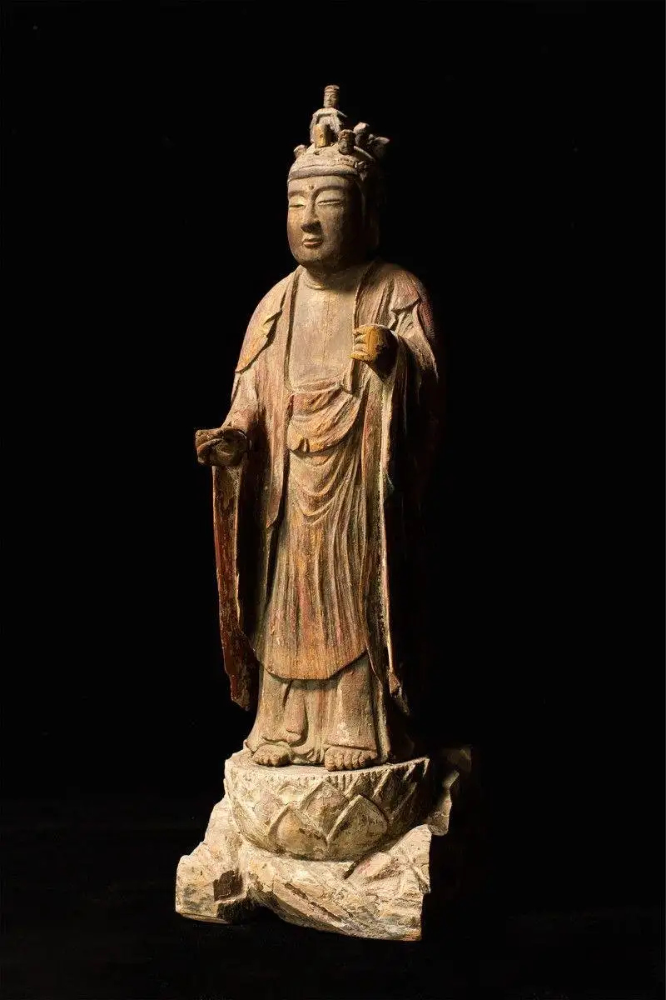
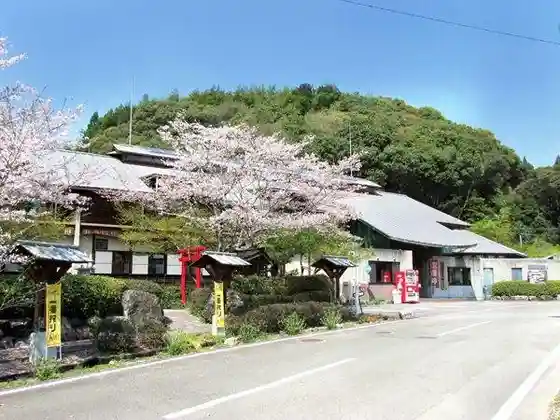
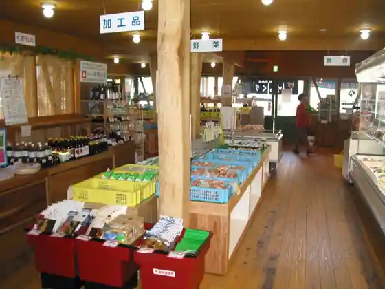
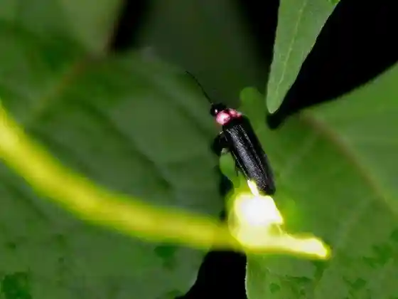
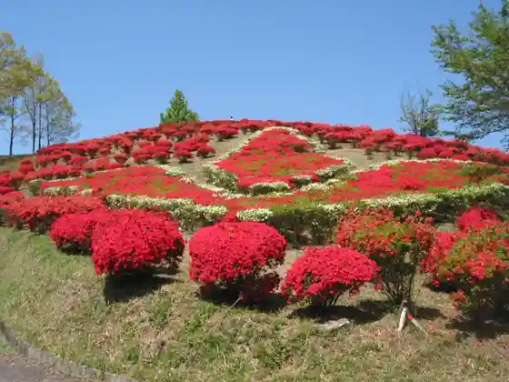

Japan / Kumamoto / Yamae
Yamae
Yamae · Kumamoto
Yamae
Highlighted on the Kumamoto map.

Sights
Yamae Onsen Hotaru
Yamae, Kumamoto · 0966-22-7171 · Official / source link

Yamae Bussan Kan
Yamae, Kumamoto · 0966-28-3582 · Official / source link

Mae Kawa, Yamada Kawa Fukin
Yamae, Kumamoto · 0966-23-3112 · Official / source link

Maruoka Park
Yamae, Kumamoto · 0966-23-3112 · Official / source link

Yamada Daio Shrine
Yamae, Kumamoto · 0966-23-3665 · Official / source link
Kassen Mine Kannon
Yamae, Kumamoto · 0966-23-3604 · Official / source link
Taka Jiin
Yamae, Kumamoto · 0966-23-3051 · Official / source link
Yamae Folk History Museum
Yamae, Kumamoto · 0966-23-3665 · Official / source link
Jidai no Eki Murayakuba
Yamae, Kumamoto · 0966-35-7000 · Official / source link
Jidori Farm
Yamae, Kumamoto · 0966-22-8009 · Official / source link
Shiroyama Kannon Do no Juichi Men Kannon Bosatsu Zo
Yamae, Kumamoto · Official / source link
Ei Ryu Sagara Shi Jokaku Gun
Yamae, Kumamoto · Official / source link